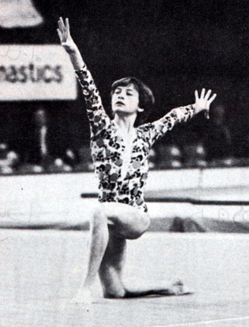

Elena Brazhnikova (USSR)

1981 Coca-Cola International
AA Champion
1984 French International AA Champion
Elena was born in Togliatti and trained at Trud with coaches Ivan Pankeev and Maya Pankeeva.
Competition Results
1978
Jr. USSR Cup (Candidate for Master of Sport): 6th AA, 5th FX
1979
Jr. Friendship Tournament (Druzhba): 1st Team, 4th AA
Jr. USSR Cup (Candidate for Master of Sport): 1st AA, 1st B, 1st FX
1980
Jr. Friendship Tournament: 1st Team, 2nd AA, 1st FX, 2nd UB
Jr. GDR-USSR Dual Meet: 1st Team, 1st AA, 1st UB, 1st B, 1st FX
Jr. USSR Championships: 2nd AA, 1st B, 2nd UB, 2nd FX, 3rd V
Jr. USSR Cup: 1st AA, 1st FX, 3rd V, 3rd UB, 3rd B
1981
All-Union Specialized Sports Schools Championships: 2nd Team, 3rd AA
Coca-Cola International: 1st AA, 1st UB, 1st B, 2nd V, 2nd FX
Jr. Friendship Tournament (Druzhba): 2nd AA
Trade Unions Championships: 3rd AA, 1st UB
USSR Championships: 8th AA
1982
Jr. Friendship Tournament (Druzhba): 1st Team, 2nd AA, 1st UB, 2nd V
Trade Unions Championships: 2nd AA
USSR Cup: 1st Team
1983
Coca-Cola International: 2nd AA, 1st V, 1st FX, 3rd UB
Moscow Oblast Spartakiade: 6th AA
USA-USSR Dual Meet: 1st Team, 6th AA
USSR Championships: 8th B
USSR Cup: 5th Team, 12th AA
USSR Spartakiade: 1st Team, 14th AA
1984
French International: 1st AA, 1st V, 3rd B
Riga International: 7th AA, 1st B
USSR Championships: 3rd Team, 5th AA, 4th UB, 4th B, 6th V
USSR Cup: 10th AA
This page was created on November
20, 2005 and was last updated on August 27, 2026.
© Gymn Forum